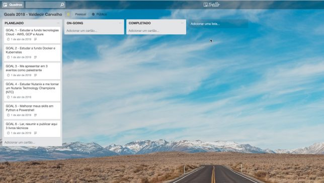

Meus objetivos para 2018
BlogCompartilhe esse post nas redes sociais...
Olá Homelabers,
Quais são seus objetivos para 2018?
Resolvi publicar esse post por dois motivos:
1. Incentivar você a traçar seus objetivos
2. Uma maneira de me cobrar, afinal está público aqui
Então vamos lá:
**GOAL 1 - Estudar a fundo tecnologias Cloud - AWS, GCP e Azure **
Ainda não tive muitas oportunidades de trabalhar no dia a dia operando e/ou desenhando soluções para Cloud. Os meu conhecimentos arranham a superfície das soluções apresentadas pelos 3 grandes player dos mercado, Até o final do ano, quero estar bem proficiente em AWS e vou basear meus estudos em cima do currículo da certificação AWS Certified Solutions Architect – Associate
BÔNUS: Estudar o currículo dos exames 70-532 ( Desenvolvimento de Soluções Microsoft Azure) e 70-533 (Implantação de soluções de infraestrutura Microsoft Azure)
GOAL 2 - Estudar a fundo Docker e Kubernetes
Outra tecnologia que ainda não tive a oportunidade de trabalhar no dia a dia. Já venho estudando sobre Docker, Kubernetes há algum tempo, mas esse ano vou focar mais a fundo nos estudos, principalmente no conteúdo do currículo da certificação Docker Certified Associate (DCA).
BÔNUS: Estudar o currículo do exame Certified Kubernetes Administrator (CKA).
GOAL 3 - Me apresentar em 3 eventos como palestrante
Esse ano quero melhorar meus skills em apresentação e me apresentar em pelo menos 3 eventos off-line (VMUG, vBrownBag na VMworld, Meetup, etc.) Vou enviar papers para todos os eventos que eu encontrar - e que estiverem alinhados com os temas que eu quero apresentar: Comunidades, Infra, Virtualização, Carreira, Arquitetura, etc.
BÔNUS: Me apresentar em algum evento internacional
GOAL 4 - Estudar Nutanix e me tornar um Nutanix Technology Champions (NTC)
Quero conhecer e estudar mais sobre a plataforma Nutanix e me tornar um Nutanix Technology Champions (NTC) em 2019. Eu sei que a Nutanix está crescendo muito no Brasil e o tema Infraestrutura Convergente está hot e já sendo adotada timidamente no Brasil, mas tende a crescer.
BÔNUS: Criar um grupo de usuários Nutanix no Brasil/SP
GOAL 5 - Melhorar meus skills em Python e Powershell
Eu tenho um passado de programador, mas depois que começei a trabalhar com Infraestrutura, tive contato com programação apenas para desenvolver scripts simples. Já conheço um pouco de Python e Powershell, sendo essa a que mais tenho contato hoje.
BÔNUS: Contribuir com 3 projetos Open Source no Github
GOAL 6 - Ler, resumir e publicar aqui 3 livros técnicos
Eu sou um devorador de livros, gosto bastante de ler, mas ultimamente tenho lido mais livros que não relacionados a tecnologia. Esse objetivo será ler 3 livros técnicos - sugestões - e fazer um resumo para publicar no blog, dessa forma terei que focar mais na leitura.
BÔNUS: Ler, resumir e publicar 5 livros técnicos.
Bom, esses são os meus maiores planos - não os únicos - para 2018 e estou os deixando públicos, porque será mais uma forma de me forçar a completar cada um. A cada 3 meses, eu farei um update sobre o progresso de cada objetivo. E claro o andamento dos objetivos serão publicados aqui, porque eu tenho muita facilidade de aprender fazendo e fixar escrevendo, então aguardem posts sobre os assuntos.
Vou deixar também o link para o board no Trello onde você poderá acompanhar mais de perto a evolução dos objetivos.
[caption id=“attachment_4619” align=“aligncenter” width=“644”] Board no Trello onde controlo meus Goals 2018. Clique na imagem para abrir - http://bit.ly/goals18VC[/caption]
E você, quais são seus grandes objetivos para 2018? Deixe ai nos comentários.
Compartilhe esse post nas redes sociais...Valdecir Carvalho
Nerd e pai orgulhoso da Mariana e João. Profissional Sênior de TI com foco em arquitetura de infraestrutura e cloud computing. Blogueiro, podcaster, palestrante, amante de comunidades técnicas, fotógrafo aposentado e adora jogos antigos.
#vExpert · #VMUGLeader · #VUGBrasil · #vBronwBagBrasil · #VeeamVanguard